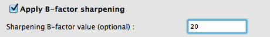

Separate FAQ lists are available for experimental phasing experimental_phasing.html, molecular replacement, model building, ligands, refinement. There is also an overview of file formats used by Phenix. You can use the Phenix chatbot to get help on any Phenix program.
How should I cite PHENIX?
If you use PHENIX please cite:
Macromolecular structure determination using X-rays, neutrons and electrons: recent developments in Phenix. D. Liebschner, P. V. Afonine, M. L. Baker, G. Bunkóczi, V. B. Chen, T. I. Croll, B. Hintze, L.-W. Hung, S. Jain, A. J. McCoy, N. W. Moriarty, R. D. Oeffner, B. K. Poon, M. G. Prisant, R. J. Read, J. S. Richardson, D. C. Richardson, M. D. Sammito, O. V. Sobolev, D. H. Stockwell, T. C. Terwilliger, A. G. Urzhumtsev, L. L. Videau, C. J. Williams and P. D. Adams. Acta Cryst. (2019). D75, 861-877
Individual programs may have additional citations.
Is there a chatbot for Phenix help?
Yes, there is a free online chatbot that contains all the Phenix documentation and text from all the Phenix tutorial videos. You can ask it any question about how to use Phenix. Note that it requires a Google account (any free account is fine).
Can I get an AI analysis of my results?
You can get an AI analysis of your results using the 'AI Analysis' button on the Results panel of the Phenix GUI for most programs. This analysis will summarize your run and suggest next steps.
What is the normal sequence of steps in Phenix if I have X-ray crystallography data?
If you have X-ray crystallography data, you are normally starting with the sequences of the chains in your molecule, along with X-ray data. Your X-ray data might have an anomalous signal (for example if you have an anomalously-scattering atom like Se and you have collected anomalous data). Your overall strategy is to obtain crystallographic phases and a density map, either by experimental phasing (if you have anomalous data), or by molecular replacement (if you can find related structures or predict the structure). Once you have a map, you will build or rebuild a model, refine it, and find any ligands.
Your first step with X-ray data is analysis of your data with Xtriage. The next step is usually to use PredictAndBuild to obtain a preliminary model and a density map starting with AlphaFold predictions, or if you have data with an anomalous signal, AutoSol and AutoBuild to solve your structure and get a map and model with experimental phasing.
If there are more than one copies of some or all chains in the unique part of your structure (in the asymmetric unit of the crystal), you may want to find the relationships between these chains (non-crystallographic symmetry) with FindNCS.
Once you have a model, with X-ray data normally you will use PhenixRefine to improve the model and automatically carry out comprehensive validation, iterating with Coot or Isolde to rebuild parts of the model that do not fit the density map well.
When you have a very good model with X-ray data, you might use Ligandfit to find the locations of ligands, followed by additional refinement and rebuilding steps.
If you have X-ray data and your model is complete, you will carry out final validation steps.
You can also split these steps in X-ray crystallographic structure determination into sub-steps so that you have more control. Instead of PredictAndBuild, you can use PredictModel to get AlphaFold models for each chain in your molecule, PhaserMR to find the location of each chain, and AutoBuild to rebuild the model. If you have data with an anomalous signal, instead of AutoSol you can run HySS to find the sites of anomalously-scattering atoms, Phaser to calculate phases and a map, and AutoBuild to build a model.
What is the normal sequence of steps in Phenix if I have cryo-EM data?
If you have cryo-EM data, you are normally starting with the sequences of the chains in your molecule and your data, two independent half-maps and a full (averaged) map. Your goal is to optimize the map and create an atomic model that matches your sequences and maps. You can obtain your model by directly building into your map or by docking structures that are similar and adjusting them.
Your first step with cryo-EM data is analysis of your data with Mtriage. You may also want to find the symmetry of your map with MapSymmetry.
The next step with cryo-EM data is usually to use PredictAndBuild to obtain a preliminary model and an improved density map based with AlphaFold predictions.
With cryo-EM data, once you have a model, normally you will use RealSpaceRefine to improve the model and automatically carry out comprehensive validation, iterating with Coot or Isolde to rebuild parts of the model that do not fit the density map well.
When you have a very good model fitting your cryo-EM data, you might use Ligandfit to find the locations of ligands, followed by additional refinement and rebuilding steps. When your model is complete, you will carry out final validation steps.
You can also break down these steps in cryo-EM structure determination into sub-steps so that you have more control. You can use MapSharpening or ResolveCryoEM to improve the clarity of your cryo-EM map. You can predict the structures of the chains in your molecule with PredictModel or you can find a similar structure in the PDB, then you can use DockInMap or EMPlacement to place these chains in your cryo-EM map. You can rebuild a preliminary model or generate a new one from a map using MapToModel.
What kind of hardware do I need to run Phenix?
A set of loose guidelines is here. To summarize: most consumer-grade systems (including laptops) purchased in the last three years should be sufficient, and at least 2GB of RAM per processor core is recommended. In many cases older hardware is fine and we ourselves continue to run Phenix on (relatively high-end) systems from 2008, but having lots of memory is still essential.
How can I use multiple processors to run a job?
Only Autosol, MR-Rosetta, Autobuild, Ligandfit, phaser.MRage, phenix.refine, the structure comparison GUI, and phenix.find_tls_groups support runtime configuration of parallel processing. In most cases this is done by adding the "nproc" keyword, for instance:
phenix.autobuild data.mtz model.pdb seq.dat nproc=5
Equivalent controls are usually displayed in the GUI. Some of these programs (phenix.refine is the major exception) also support parallelization over queuing systems; this may require manual input of the queue submission command.
In addition to these options, it is also possible to compile phenix.refine and Phaser with the OpenMP library, which automatically parallelizes specific instructions such as the FFT. This requires using the source installer for Phenix, and adding the argument "--openmp" to the install command. Because of threading conflicts, OpenMP is not compatible with the Phenix GUI.
How can I run Phenix across multiple computers in our lab?
You will need to install a managed queuing system to handle job submission. Currently we support (to varying degrees) Sun Grid Engine, PBS, LSF, and Condor. Note that this assumes that the available processors are dedicated for cluster use, otherwise the submitted jobs will compete for resources with local processes.
You can use the queuing system in two ways: either to parallelize the execution of subprocesses for various programs listed above, or to submit jobs from the Phenix GUI. However, these two options are not inherently compatible: if you submit a job from the GUI it will usually be unable to submit additional child processes to the queue without further configuration.
Where can I find sample data?
You can find sample data in the directories located in $PHENIX/examples. Additionally there is sample MR data in $PHENIX/phaser/tutorial.
In the Phenix GUI, tutorials may automatically be set up as projects. (You must run the specific programs manually, however.)
Can I easily run autosol, autobuild or ligandfit with some sample data?
You can run sample data with with a simple command. To run p9-sad sample data with autosol, you type:
phenix.run_example p9-sad
This command copies the $PHENIX/examples/p9-sad directory to your working directory and executes the commands in the file run.sh
What sample data are available to run automatically?
You can see which sample data are set up to run automatically by typing:
phenix.run_example --help
This command lists all the directories in $PHENIX/examples/ that have a command file run.sh ready to use. For example:
phenix.run_example --help PHENIX run_example script. Fri Jul 6 12:07:08 MDT 2007 Use: phenix.run_example example_name [--all] [--overwrite] Data will be copied from PHENIX examples into subdirectories of this working directory If --all is set then all examples will be run (takes a long time!) If --overwrite is set then the script will overwrite subdirectories List of available examples: 1J4R-ligand a2u-globulin-mr gene-5-mad p9-build p9-sad
Are any of the sample datasets annotated?
The PHENIX tutorials listed on the documentation index will walk you through sample datasets, telling you what to look for in the output files. For example, the Tutorial 1: Solving a structure using SAD data tutorial uses the p9-sad dataset as example. It tells you how to run this example data in autosol and how to interpret the results.
How is non-crystallographic symmetry handled in PHENIX for X-ray structures?
Non-crystallographic symmetry (NCS) in a crystal structure refers to local symmetry that is not part of the crystal lattice itself. For example, within the asymmetric unit of a crystal there might be two copies of a chain related to each other by a two-fold axis that does not align with any axis of the crystal. These two copies are related by local, or non-crystallographic symmetry. Normally the NCS is represented by a set of matrices and translations that relate each copy to a reference copy. This may be written as an NCS file, often with the suffix, '.ncs_spec'.
The treatment of NCS in crystallography depends on the specific program or task:
Note that several programs may produce multiple forms of output specifying the NCS relationships. Files ending in .ncs_spec contain rotation and translation matrices for use in RESOLVE. Files ending in .phil contain atom selections for use in phenix.refine. In most cases, however, you can ignore these files, as the NCS relationships will be detected automatically.
What does map symmetry mean in cryo-EM structure determination?
The symmetry of the map in a cryo-EM structure determination is normally referred to as 'map symmetry' or 'map reconstruction symmetry', as it is the symmetry that was applied during the reconstruction of the map.
The symmetry of the map can be referred to by symbols such as C2 or O, and it can be stored as matrices and translations in the same form as non-crystallographic symmetry us stored in crystallography (in files with names like 'map_symmetry.ncs_spec').
In some cases it the words 'NCS symmetry' may refer to the map symmetry in cryo-EM, but this usage should generally be avoided. Note that the file names with map symmetry do have the word 'ncs_spec'. This is because the format is identical to that used in crystallography for NCS.
A cryo-EM map can have local symmetry (symmetry of the molecule that is not present in the reconstruction symmetry) as well. This local symmetry is similar to the local symmetry that can be present in crystal structures. Phenix does not have a system to handle local symmetry in cryo-EM structures at present.
How can I get Phenix to use a local PDB mirror instead of fetching entries remotely?
The Phenix GUI, phenix.cif_as_mtz, MRage, MR-Rosetta and several other programs use a common central function to download PDB files. You can substitute your own local PDB mirror by defining environment variables, for instance in bash/sh:
export PDB_MIRROR_PDB=/data/pdb_mirror/pdb export PDB_MIRROR_STRUCTURE_FACTORS=/data/pdb_mirror/structure_factors
The structure factors are optional and may be left out to conserve disk space; most applications are only concerned with the model data. In both cases, these directories should contain a series of subdirectories with two-character names corresponding to the middle two characters of PDB IDs, each containing associated PDB files with specific names such as:
$PDB_MIRROR_PDB/hb/pdb1hbb.ent.gz $PDB_MIRROR_STRUCTURE_FACTORS/hb/r1hbbsf.ent.gz
If the mirror is out of date and a specific entry cannot be found, the function will revert to downloading from the RCSB PDB site.
I'm upgrading to a new version of Phenix. How do I uninstall the previous version?
You can simply delete the entire folder, for example /usr/local/phenix-VERSION or (on Mac) /Applications/PHENIX-VERSION. On Mac, you can drag the folder into the Trash. Each installation is entirely self-contained and all project data is stored elsewhere (for instance in your home directory).
Can multiple installations of Phenix co-exist on the same computer?
Yes, but note that the command names will overlap, so you will either need to source the appropriate phenix_env script as needed, or launch programs with the version suffix:
phenix.refine-1.8.4-1496 phenix.refine-1.9-1962
When I start up the Phenix GUI for the first time, I get an error message "ImportError: libjpeg.so.62: cannot open shared object file: No such file or directory". How do I fix this?
This error usually occurs on recent versions of Ubuntu, which do not install an essential library by default. You can fix it by running this command:
sudo apt-get install libjpeg62
How do I find a specific parameter in the GUI?
Open the Settings menu, and select Search all parameters. This can be used to search for any keyword in the parameter name, label, or help text.
What reflection file formats does Phenix support?
We recommend using MTZ files where possible but several other formats are also read (including XDS and Scalepack). Programs in Phenix rarely output any format other than MTZ, however. See the overview in the page for file formats for more details.
I have requested that the test set fraction be 0.05 (i.e. 5%), but Phenix only flags 1% of reflections. How do I make it use the number I specify?
By default there is a limit of 2000 on the number of reflections that will be picked for the test set; you don't really need more than this to ensure that R-free is statistically significant and that the maximum likelihood calculations work properly. However, if you want to use a full 5%, you can tell Phenix not to put any upper absolute limit. In the reflection file editor in the GUI, click "More options" in the R-free flags section of the editor, and delete the field labeled "Maximum number of reflections in test set".
Are MTZ files (or R-free flags) output by CCP4 data processing software suitable for use in Phenix?
Yes, absolutely. By default Phenix uses a different convention for labeling the test set when generating new R-free flags, but it will automatically detect the CCP4 convention and adjust as needed.
Phenix generated R-free flags with the test set denoted by 1, but REFMAC expects 0. How can I generate a more compatible MTZ file?
The reflection file editor has an option to export R-free flags to the CCP4 convention. Note however that newer versions of REFMAC will adjust to the Phenix convention automatically, so we recommend updating your CCP4 installation if you encounter this problem.
Should I use the MTZ file output by phenix.refine as input for the next round of refinement?
(Excerpted from the refinement FAQ, since this question is so common.)
The only time this is necessary is when you refined against a dataset that did not include R-free flags, and let phenix.refine generate a new test set. In this case, you should use the file ending in "_data.mtz" for all future rounds of refinement. You do not need to update the input file in each round, as the actual raw data (and R-free flags) are not modified.
I generated map coefficients in MTZ format using [some Phenix tool]. Why doesn't anything appear when I open it in Coot?
This almost always results from use of the "Auto-open map coefficients" menu item in Coot, which only recognizes several specific MTZ column labels output by programs such as phenix.refine, phenix.maps, Phaser, or REFMAC. (Several other programs in Phenix will now also output the FWT,PHWT columns that are interpreted as a 2mFo-DFc map, although depending on the program these may actually be a density-modified mFo map.) For any other map coefficient labels, for example an anomalous map, you will need to use the next menu item which requires explicit selection of the amplitude and phase labels. You can however modify the Coot preferences to recognize additional map types by editing the file ~/coot.py and adding one or more lines line the following:
set_auto_read_column_labels("FEM", "PHIFEM", 0)
which would make it possible to auto-open the feature-enhanced maps <../reference/fem.html>_. (Thanks to Georg Mlynek for this suggestion.)
Note that in most cases the Phenix GUI will automatically load the appropriate map coefficients for you upon clicking the Coot button in the results tab. Also note that on Macintosh, there are bugs in the X11/XQuartz software which often result in the window to select column labels appearing behind the main Coot window, which is easy to miss.
I have an MTZ file containing map coefficients. How can I obtain a map appropriate for display in PyMOL (or Chimera, etc.)?
In the Phenix GUI, this is almost always automatic: any time a button labeled "Open in PyMOL" is displayed, this will perform the necessary conversion to CCP4 format. In the phenix.refine GUI, there is also a separate button to simply generate the CCP4 maps without opening PyMOL. The map grid spacing, which controls the fineness of the displayed mesh, can be set in the "Graphics" section of the Preferences. By default this is a relatively conservative d_min/3 for reasons of speed and disk space. In most cases the map region will cover the atoms in the corresponding PDB file plus a generous buffer.
You may also create CCP4 (or X-PLOR or DSN6) maps manually. In the GUI, the program labeled "FFT map coefficients" in the "Maps" category performs this action; only an MTZ file is required as input, but a PDB file is recommended if you want to ensure that all atoms are covered. Every valid set of map coefficients in the MTZ file will be converted, with the exception of F(model) arrays. On the command line, this program exists as phenix.fft or phenix.mtz2map:
phenix.fft refine_001.mtz refine_001.mtz grid_resolution_factor=0.25
What is the best way to generate an omit map in Phenix?
There are several options (with some overlap in functionality):
Do Phenix maps contain R-free-flagged reflections?
In most cases, yes (except as noted below). For programs such as phenix.refine or phenix.maps, maps may optionall have the flagged reflections excluded, but this is not the default behavior. In the Phenix GUI, the "Refinement" section of the Preferences allows you to set this option this globally. Usually this will lead to flagged reflections being substituted by F(model) to prevent Fourier artifacts due to incomplete data; this may slightly increase model bias but it will not lead to biasing R-free if the resulting map coefficients are used for real-space refinement. The program phenix.remove_free_from_map can remove the flagged reflections from an existing MTZ file, and phenix.fft/pheniz.mtz2map has an option to perform this when converting to CCP4 or similar format.
Although the previous paragraph applies to output maps, the real-space refinement in phenix.refine always removes flagged reflections from the maps used internally. This is essential to prevent biasing R-free by refining against the real-space map incorporating the flagged reflections.
Both phenix.refine and phenix.maps allow you to customize the generation of map coefficients and/or CCP4 maps. In either case, there will be a button to enter map options, with several pre-defined map types already entered (at least 2mFo-DFc, mFo-DFc, and anomalous). Each map has a setting to activate map sharpening, and an input field to enter the B-factor to apply. Negative values sharpen the map, positive values blur it.

Note that Coot also allows you to perform these operations interactively (Calculate menu --> Map sharpening...), which may be more helpful than guessing a number.
How do I obtain an anomalous difference map in Phenix?
If you have anomalous data (separate F+ and F- or I+ and I-) and use this as input, both phenix.maps and phenix.refine will automatically output the anomalous difference map in the map coefficients MTZ file. Note that depending on the application, you may need to manually open the MTZ file in Coot to get the anomalous map to appear.
How can I calculate a log-likelihood gradient SAD map using Phaser?
Several programs in Phenix interface with Phaser to calcluate an LLG map given a model with existing anomalous (and real) scatterers. This map is more sensitive towards weaker scatterers (such as phosphorous, sulfur, and chloride, or partially-occupied heavy atoms) because it subtracts the contribution of existing atoms. (In this sense it is similar to any other difference map, where the sigma level of the map around remaining unmodeled atoms becomes increasingly higher as more atoms are added to the model). The first two options are recommended; in both cases you will need to request an additional set of map coefficients where map_type=LLG. (This is available as a preset option in the GUI.)
Finally, for automation purposes, there is a utility for calculating a single set of map coefficients:
mmtbx.compute_map_coefficients model.pdb data.mtz wavelength=0.9792 map_type=llg
This should produce identical output to phenix.maps, but has been streamlined to require minimal input.
I have maps for the same protein(s) in different crystal forms, which I would like to compare. How can I superpose the maps along with the models?
There are two options for this, with slightly different limitations and uses:
The validation GUI (or the PDB deposition annotator) is complaining about zero-occupancy atoms. Why does this happen, and how can I fix it?
The most common reason for atoms having zero occupancy is heteroatom groups (in this context, any atom labeled as HETATM in the PDB file) being reset to zero occupancy by Phaser. Although this can be avoided by modifying the Phaser settings, it is easy to fix using several different programs:
Please note that any time you modify the atomic properties (or add or remove atoms), it is essential to refine the model again, as the previously calclulated R-factors and maps will be invalid.
What is the difference between ATOM and HETATM records in a PDB file?
Within Phenix, few distinctions are made between the different atom labels. ATOM generally refers to canonical amino acid residues or nucleic acid bases; HETATM ("heteroatom") covers everything else, including non-canonical amino acids such as selenomethionine (MSE), covalently modified residues, ligands, and solvent. However, this distinction is not enforced (and is frequently ignored) within Phenix, and the choice of label will usually have no effect on program behavior. (The lone exception is Phaser, which by default sets the occupancies of HETATMs to zero unless they are part of a protein polymer.) The PDB annotators will change ATOM to HETATM as needed upon deposition.
This section is used to clarify subjects.
Can I use Polder for cryo-EM data?
No, Polder is only suitable for crystallographic data
(These questions pertain to the Rosetta software for protein structure prediction and design, which is developed and distributed separately from Phenix but is used internally by tools such as MR-Rosetta and phenix.rosetta_refine.)
When I try to build the hybrid Python-enabled Rosetta for running refinement, I get the error below. What does it mean and how can I fix it?
[root@localhost ~]# rosetta.build_phenix_interface nproc=8 scons: Reading SConscript files ... Running versioning script ... Done. (0.0 seconds) Could not find platform independent libraries <prefix> Could not find platform dependent libraries <exec_prefix> Consider setting $PYTHONHOME to <prefix>[:<exec_prefix>] ImportError: No module named site
This error happens when the Rosetta build system tries to run Python internally to generate additional files used in compilation. Although we include a complete Python environment with Phenix, Rosetta will probably use the system's Python interpreter (or whatever is defined as the 'python' command). The error message you see means that this interpreter is completely broken, i.e. something is wrong with your system. You can confirm this by running a command such as:
python -c "import site"
You should consult your local system administrator and/or OS reference manual for assistance fixing the problem.
How can I obtain phases and Hendrickson-Lattman coefficients for my model and data?
There is a program specifically for this purpose; you can find in in the Phenix GUI under "Reflection tools".